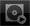
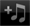

Pannelli di rekordbox
Menu principale

Lanciato rekordbox (iOS/Android), appare il menu principale.
Prepare
Usato per creare vari tipi di informazione sui punti, playlist, ecc. come preparativi avanzati per prestazioni DJ.

 Load
Load
Usato per collegarsi a lettori DJ per performance DJ.
 Connect
Connect
Usato per importare file audio già analizzati con rekordbox (Mac/Windows), i vari tipi di informazioni su punti, playlist, ecc. in rekordbox (iOS/Android). Viene anche usato per riflettere le modifiche fatte di vari tipi di informazione su punti, playlist, ecc. già aggiornati con rekordbox (iOS/Android) in rekordbox (Mac/Windows).
 Import
Import
Usato per analizzare i file audio del dispositivo mobile ed aggiungerli alla libreria di rekordbox (iOS/Android).
 Help
Help
Aprire il menu di impostazione di Aiuto.
 Settings
Settings
Usato per controllare e cambiare vari parametri.
Barra degli strumenti
Per quanto riguarda le icone visualizzata nella barra degli strumenti in fondo allo schermo, vedere la tabella che segue.
Icona | Descrizione | |
 | Menu | Fa comparire il menu principale.. |
 | Browse | Riporta al livello superiore del pannello del browser . |
 | Playing | Usato per aprire il pannello del lettore e visualizzare il brano al momento riprodotto. |
 | USB | Usato per scorrere i contenuti del dispositivo USB collegato all’unità DJ (XDJ-AERO) e per riprodurli con l’unità DJ (XDJ-AERO).
|
 | Import | Usato per analizzare i file audio del dispositivo mobile ed aggiungerli alla libreria di rekordbox (iOS/Android). |
 | Settings | Usato per controllare e cambiare vari parametri. |
 | Help | Apre il file di aiuto (manuale dell’utente). |